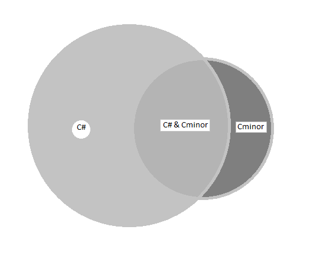

Cminor is quite a small language whose core statements and expressions are identical with statements and expressions in C#. Cminor does not contain all the features of current C#. For example, value types other than basic value types (a.k.a "structs") are missing. So are lambda expressions, closures and many other features of current C#. However it is not a proper subset of C# either because Cminor has non-member functions and C# does not, for example. One can say that Cminor and C# are siblings and C# is the big brother or sister of Cminor.
Currently Cminor programs can be compiled either to Cminor virtual machine instructions (intermediate code), or to native object code. Support for JIT compilation (just-in-time compilation) is planned. Programs compiled just to intermediate code are run in virtual machine by interpreting the intermediate instructions. Programs compiled to native object code are also run in virtual machine with the help of runtime support functions built into the virtual machine. Cminor programs are garbage-collected so there's no need for manual memory management.
The Cminor System Library has borrowed many classes from .NET Framework but the same relationship exists with Cminor System Library and .NET Framework as the relationship with Cminor and C#: the .NET Framework is the big brother of Cminor System Library.
The system library contains:
Currently Cminor runs on Windows x64 and Linux x86_64 platforms.
Cminor is distributed under the MIT License.
Motivation for creating this language, its compiler and virtual machine, was to learn the basics of virtual machine architecture and garbage collection, and to experiment with them. My implementation cannot naturally compete with industrial strength languages like C# or Java, but I hope that someone finds it useful, will study how it's done, or just enjoy experimenting with it. The source code of the compiler, virtual machine and libraries is available in http://github.com/slaakko/cminor.